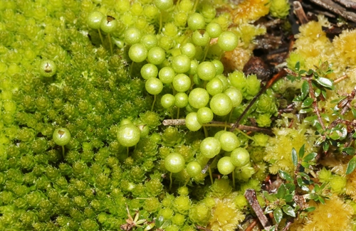

Pleurophascaceae
(Pleurophascum Moss Family - informal)
Pleurophascaceae is a monotypic family endemic to the Southern Hemisphere, containing only Pleurophascum grandiglobum. This robust moss resembles Sphagnum in habit, forming cushions in bogs, but is distinguished by its broad, concave, ecostate leaves and especially by its unique, large, globose, sessile, cleistocarpous capsules borne laterally on the stems.
Overview
The Pleurophascaceae family is a remarkable and unusual group represented by a single species, Pleurophascum grandiglobum. This moss exhibits a striking superficial resemblance to peat mosses (Sphagnum), forming robust, pale green, yellowish, or reddish cushions and hummocks in boggy habitats and wet heathlands. However, this resemblance is purely convergent, as its underlying structure and reproductive features are vastly different.
Endemic to temperate regions of the Southern Hemisphere (southeastern Australia, Tasmania, New Zealand, southern South America), Pleurophascum is characterized by broad, concave leaves lacking a costa and, most notably, by its exceptionally large, spherical capsules. These capsules are sessile (lacking a stalk or seta), borne laterally on the stems (cladocarpous), and cleistocarpous (lacking any mechanism for opening). Spores are released only upon decay of the thick capsule wall. This combination of a robust, Sphagnum-like gametophyte with large, sessile, cleistocarpous capsules borne laterally is unique among mosses.
Due to its highly distinctive and unique combination of features, the phylogenetic placement of Pleurophascaceae is highly uncertain. It is often placed in its own monotypic order, Pleurophascales, signifying its evolutionary isolation from other major moss lineages.
Quick Facts
- Scientific Name: Pleurophascaceae
- Common Name: (Pleurophascum Moss Family - informal)
- Number of Genera: 1 (Pleurophascum)
- Number of Species: 1 (Pleurophascum grandiglobum) - (potentially a second, P. occidentale)
- Distribution: Southern Hemisphere temperate regions (SE Australia, Tasmania, New Zealand, S. South America).
- Evolutionary Group: Bryophytes - Bryopsida (True Mosses) - Order uncertain (often Pleurophascales).
Key Characteristics
Pleurophascaceae possesses a unique blend of robust gametophytic features and highly specialized sporophytic features.
Gametophyte Form and Habit
The gametophyte generation resembles Sphagnum superficially:
- Habit: Plants robust, forming dense cushions or hummocks, similar in appearance to peat moss (Sphagnum).
- Size: Stems erect, often several centimeters high, typically branched.
- Color: Pale whitish-green, yellowish, pinkish, or reddish-brown.
- Stems: Relatively stout. Central strand may be present or absent.
- Substrate: Found in open, wet, boggy habitats, peatlands, and wet heathlands.
Leaves (Phyllids)
Leaves are broad, concave, and lack a costa:
- Arrangement & Shape: Crowded, densely overlapping (imbricate), erect-spreading, broadly ovate to almost circular, deeply concave (cochleariform, spoon-shaped). Apex broadly rounded or obtuse.
- Costa (Midrib): Characteristically absent or rudimentary (very short and weak at the base).
- Margins: Entire (smooth), often incurved due to the leaf concavity.
- Cells: Laminal cells relatively large, thin-walled, lax, smooth, typically rhomboidal to hexagonal. Cells uniform across the leaf; no specialized hyaline/chlorophyll cells like Sphagnum. Alar cells not differentiated.
Reproductive Structures
- Sexual Condition: Variable, reported as autoicous or dioicous.
- Archegonia & Antheridia: Borne laterally on short branches arising from the main stems (cladocarpous). Perichaetial and perigonial leaves similar to vegetative leaves or slightly modified.
Sporophyte
The sporophyte is exceptionally large, sessile, and cleistocarpous:
- Seta: Essentially absent; the capsule is sessile on the short lateral reproductive branch.
- Capsule: Very large (often 3-5 mm or more in diameter), erect, symmetric, perfectly globose (spherical), yellowish to brown when mature.
- Dehiscence Mechanism: Cleistocarpous - lacks an operculum and peristome; the thick capsule wall does not open actively, and spores are released only upon decay.
- Operculum & Peristome: Absent.
- Calyptra: Very small relative to the capsule, mitrate (conical), covering only the very apex of the immature capsule, ephemeral.
Spores
Spores are large, tetrahedral, and typically coarsely papillose or tuberculate.
Chemical Characteristics
No specific chemical characteristics are widely noted beyond those typical for Bryopsida mosses adapted to bog environments.
Field Identification
Identifying Pleurophascaceae relies on recognizing the Sphagnum-like habit in Southern Hemisphere bogs combined with the unique, large, sessile, spherical capsules.
Primary Identification Features (Hand Lens Level)
- Habitat & Location: Critical – found only in bogs and wet heathlands in temperate Southern Hemisphere regions (Australia, NZ, S. South America).
- Sphagnum-like Habit: Look for robust, cushion- or hummock-forming mosses with a pale green, yellowish, or reddish appearance, resembling peat moss.
- Large, Globose, Sessile Capsules: The most diagnostic feature. Search for very large (several mm), perfectly spherical capsules sitting directly on the sides of stems or branches, without any stalk (seta).
- Cleistocarpy: Capsules lack any lid or opening mechanism.
- Broad, Ecostate Leaves: Observe the broad, concave leaves that lack a midrib (costa).
Secondary Identification Features
- Lax Leaf Cells: Cells appear relatively large and clear under a strong hand lens.
- Robust Stems: Plants feel sturdy.
Seasonal Identification Tips
- Year-Round: Gametophytes are perennial and identifiable by habit, habitat, location, and leaf features.
- Variable (likely Spring/Summer): Sporophytes are conspicuous due to their size when mature.
Common Confusion Points
Distinguishing Pleurophascum from superficially similar mosses:
- Sphagnum (Sphagnaceae): The primary confusion due to habit and habitat. Sphagnum is distinguished by its unique anatomy: stems with clusters of distinct spreading and pendent branches (fascicles), and leaves composed of dimorphic hyaline and chlorophyll cells. Its capsules are smaller, borne on a pseudopodium (not truly sessile), and open explosively via an operculum.
- Leucobryum (Leucobryaceae): Forms whitish cushions but has multi-layered leaves (leucocysts/chlorocysts) and stalked capsules with peristomes.
- Other Cushion Mosses (e.g., some Dicranaceae, Polytrichaceae): Differ fundamentally in leaf structure (usually costate, different cell types), capsule shape/position (stalked, operculate, peristomate), and habitat details.
- Other Cleistocarpous Mosses (Bruchia, Pleuridium, Archidium, etc.): All are significantly smaller plants with very different gametophyte habits and much smaller, differently shaped capsules (often stalked or with different features like necks or huge spores).
Field Guide Quick Reference
Look For:
- Habitat: Bogs/wet heath (S. Hemisphere ONLY)
- Robust, Sphagnum-like cushions (pale color)
- Broad, concave, ecostate leaves
- Very large, globose, sessile capsules
- Capsules borne laterally
- Capsules cleistocarpous (no lid/peristome)
Key Distinctions:
- vs. Sphagnum: Leaf cell structure (uniform vs. dimorphic), branch structure (fascicles absent vs. present), capsule (sessile/cleistocarpous vs. stalked/operculate).
- vs. Leucobryum: Leaf structure (uniform vs. multi-layered), capsule (sessile/cleisto vs. stalked/peristomate).
- vs. Other Cleistocarpous Mosses: Plant size/habit, capsule size/shape/position.
Notable Examples
The family Pleurophascaceae is monotypic, containing only one widely recognized species.

Pleurophascum grandiglobum
(Pleurophascum Moss)
The sole species in the family, found in Southern Hemisphere bogs. It forms robust, Sphagnum-like cushions but is distinguished by its broad, ecostate leaves and unique, very large, spherical, sessile, cleistocarpous capsules borne laterally on the stems.
Phylogeny and Classification
Pleurophascaceae is classified within the class Bryopsida. Its phylogenetic position is highly uncertain due to its unique combination of a robust, Sphagnum-like gametophyte and a highly specialized, reduced sporophyte (large, sessile, cleistocarpous capsule).
Because of its distinctiveness and lack of clear morphological links to other major groups, it is frequently placed in its own monotypic order, Pleurophascales. Attempts to place it based on morphology have been inconclusive. Early suggestions linked it vaguely to Dicranales or Bryales, but these were weakly supported.
Molecular phylogenetic studies have also struggled to find a stable position for Pleurophascum. Some analyses place it as an isolated lineage near the base of the Bryopsida or potentially related to early diverging lineages within the Dicranales or Bryales complexes, but often with low support. It remains one of the phylogenetic enigmas within the mosses, representing a potentially ancient and highly specialized evolutionary trajectory.
Position in Plant Phylogeny
- Kingdom: Plantae
- Clade: Embryophyta (Land Plants)
- Division: Bryophyta (Mosses)
- Class: Bryopsida
- Order: Pleurophascales (often) / Placement Highly Uncertain
- Family: Pleurophascaceae
Evolutionary Significance
Pleurophascaceae is evolutionarily significant for:
- Convergent Evolution: Its Sphagnum-like habit demonstrates convergence in form related to bog environments.
- Unique Sporophyte Syndrome: The combination of large size, sessile position, globose shape, and cleistocarpy is unparalleled in mosses, representing a unique evolutionary experiment in sporophyte form and function.
- Phylogenetic Isolation: Its uncertain placement highlights the diversity of deep evolutionary branches within mosses and potentially represents an ancient, relictual lineage.
- Biogeography: Its restriction to temperate Southern Hemisphere peatlands provides insights into Gondwanan biogeographic patterns.